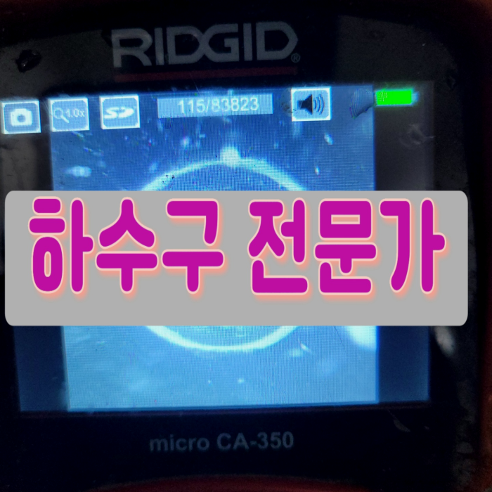
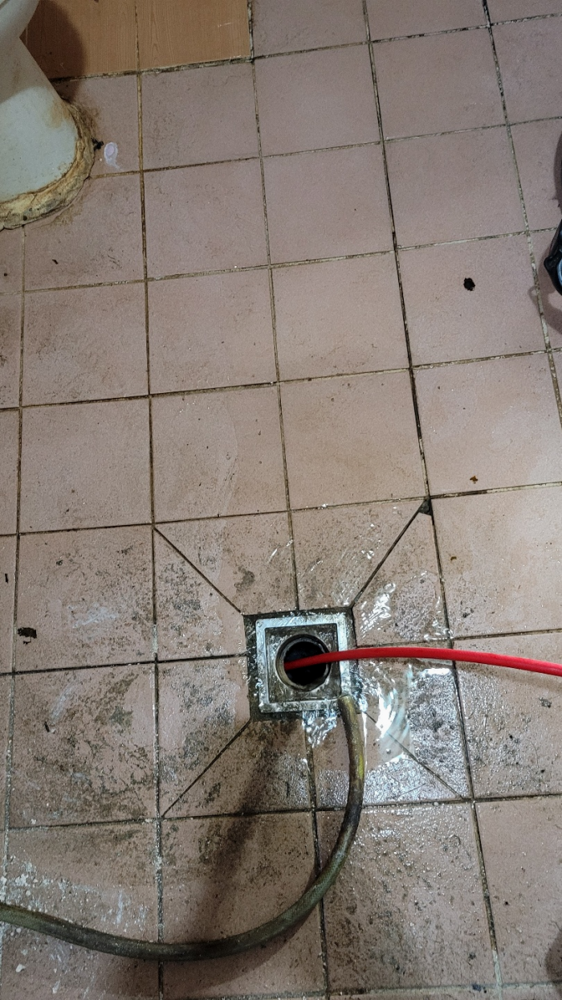
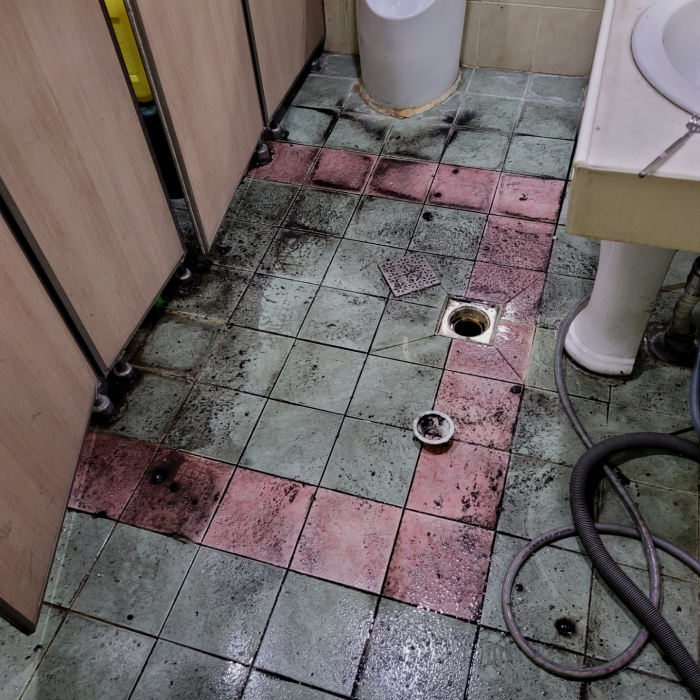
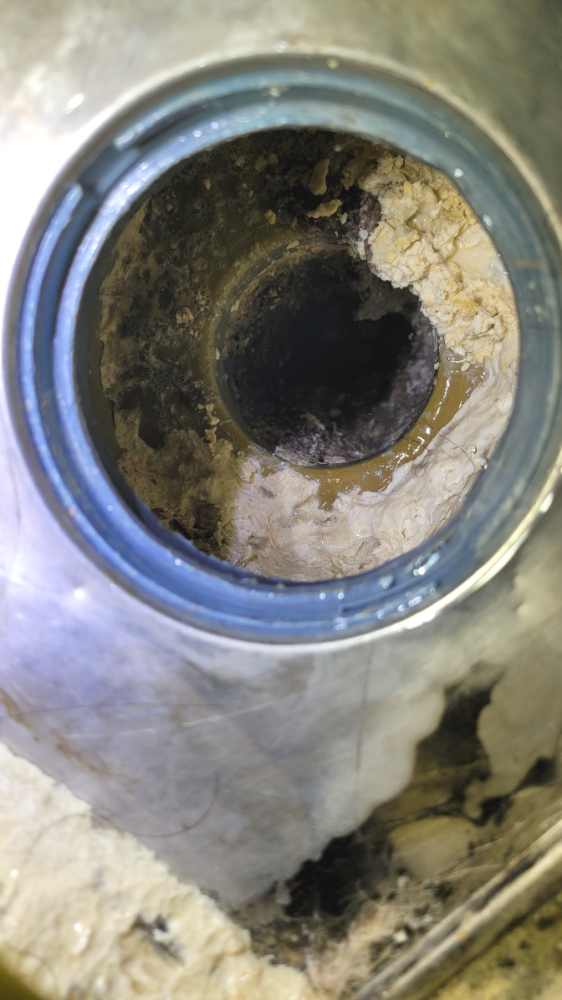
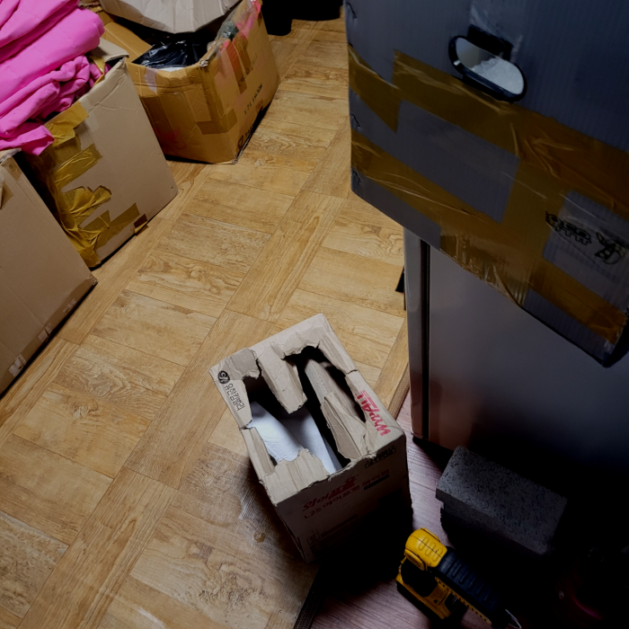
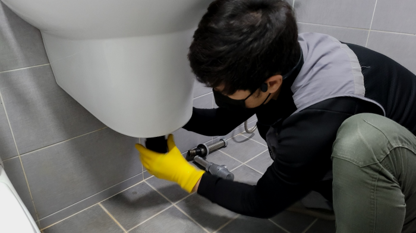
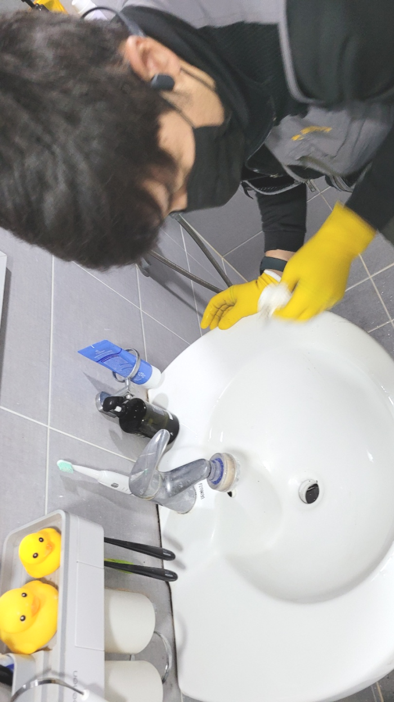

🏠 수원 송죽동 화장실배수구막힘 영화동 하수관역류 뚫음 설비공사
수원 싱크대막힘 전문 시공 후기

📋 작업 개요
- 위치: 수원
- 서비스 유형: 싱크대막힘, 변기막힘, 하수구막힘, 배관막힘, 역류해결, 뚫는업체, 배관청소, 고압세척, 설비공사
- 작업 일시: 2023. 12. 31. 23:20
- 업체명: 하수구수사대 (010-5615-2118)
🔍 문제 상황
어서오세요
설비전문업체 "하수구수사대"를 찾아주셔서 감사드려요^^
배수구는 워낙 당연하게 이용하는 시설이기 때문에 인지하지 않고 모르고 살아가지만 우리에게는 없어서는 안될 설비중에 하나입니다.
배출구 막힘 상황에 따라 통수방식이 달라서 최신장비로 확실한 원인을 검수하고 진단하여 이에 맞는 적절한 장비를 택해 작업을 진행해야합니다.
수원 송죽동 화장실배수구막힘 영화동 하수관역류 뚫음 설비공사

🔎 원인 분석
💡 전문가 진단: 수원 송죽동 화장실배수구막힘 영화동 하수관역류 뚫음 설비공사
우리가 평소에는 땅에 묻혀있는 배수관배관에 크게 신경을 쓰면서 살아가지는 않지만 배관은 일상 속에서 배수관막힘이 발생하지 않도록 주의를 기울여야 하는 부분 중의 하나라고 할 수 있습니다. 갑자기배수관 배관이 막히게 되면 큰 불편함이 많이 생기게 될 수밖에 없는데요.
배출구 안쪽에 이물질이 적을때에는 셀프로 처리를해도 훼손없이 눈으로볼수있는 곳까지는 쉽게 제거할수있어요. 반면에사태가 엄중할경우엔 자가로진행하는처치로는 나아지기 어렵죠. 구두주걱같은 기다란것들을 넣게된다면 배출구안쪽으로 흘려가서 잔해물질등과 뒤섞여서 더욱심각한문제로 번질수있죠.
배관배관 내에는 많은 기름 덩어리들이 있을 수 있겠다는 예상을 하면서 내부의 상태를 자세하게 살펴보기로 하였는데요. 홀에서부터 주방까지 어떻게 배관막힘이 발생하였는지 확인을 하기 위해서 저희는 내시경 카메라 작업을 하기로 하였습니다.
인터넷에서 쉽게 얻을 수 있는 정보들은 대부분 미비한 효과에서만 그치고 근본적인 원인은 해결해 주지 못합니다. 퇴수막힘의 정도가 심하지 않을 땐 괜찮을 수도 있겠으나 처음부터 천문가가 필요한 상황이었다면 괜한 비용 낭비만 하신 격이 될 수 있습니다.
갑작스럽게 퇴수 때문에 당황스러운 것이 당연한데 설거지 도중에 통수가 되지 않고 멈춰 있기도 해요. 전조증상을 미리 알지 못했던 탓에 이도 저도 못하는 상황까지 오게 되죠. 퇴수 내부는 오랜 기간에 걸쳐 막히기 시작했을 텐데 대개는 잘못된 습관 때문에 이 같은 상황이 벌어져요.
한 번만의 작업으로 인해서 몇 개월혹은 몇 년 이상 하수구가 막히는 일이 없도록 관리할 수 있기 때문에 많은 분들이 배관에 정기적인 작업으로 쾌적한 유지를 하고있습니다.

🔧 작업 과정
현장을 방문하여 현장에 맞는 장비를 확인한 뒤 싱크대 배출관 냄새로 불편함을 겪고 계시는 고객님 댁에 방문해 현장을 확인했습니다. 일차로 싱크대 배출관가 막힌 뒤 물이 내려가지 않아 설거짓거리가 그대로 방치된 모습을 확인할 수 있었습니다.
처음에는 급한 마음에 혼자서 셀프 요법으로 해결을 하려고 했지만 얼마 지나지 않아서 아예 배출관가 막혀버리다 보니 아무런 소용이 없었다고 하셨습니다.
플랙스샤프트는 장비 전체를 회전하는 방식으로 배출관배관에 쌓인 채로 굳어진 오염물질을 분쇄하도록 도와주는 장비입니다. 강한 힘으로 단단하게 달라붙은 이물질과 석회를 부숴주어야 배출관배관이 정상적으로 기능할 수 있습니다. 일반적으로 플랙스샤프트로 이물질을 작게 부순 다음 석션으로 흡입하여 제거해 주면 됩니다.
저희 하수 전문가 분들께선 작업에 착수하고 같은문제가 반복될가능성이 있는것을 완벽제거하는것을 최종적인 목표로하고있어요. 혹여라도 하수 문제재발시 무료로작업하는서비스를 실시하고있어요
작성하는 글들은 사실만을 적시했고 오랜시간동안 많은 배출관들을 고쳐왔으며 이를통해 쌓은경험으로 고객님들의 청결한배관을위해 성심을다한답니다
위처럼같은상황을 예방하기위해서는 애당초 배테랑이있는지 미리확인하시는게 좋은방법이랍니다.저희팀의경우 빠짐없이 모든분들이 경력자이기에 안심하셔도됩니다.
단순히 배출관 뚫고 얼마 지나지 않아서 다시 막히는 경우도 종종 있는데 그럴 땐 기름들이 배출관배관에 단단하게 박혀 있어 좁아진 배수관으로 물이 시원하게 흘러나가지 못하고 역류하기 때문에 이럴 땐 배출관고압세척으로 배관세척을 하시는 것이 매번 뚫는 하수관 청소보다 훨씬 효과적입니다.
배수구배관을 청소하고 나서라도 다시금 이런 행동들이 반복된다면 하수구 막힘은 언제든 발생될 수 있기 때문입니다. 관리인분께서는 청소하시는 분들에게 이런 사항을 꼭 전달해야겠다며, 그래도 다행히 빠르게 수습이 되어 감사하다는 말씀을 전해주셨습니다.


✅ 작업 완료
불편한 상황이 반복되고 있다면 그냥 내버려 두기보다는 하수관 전문설비업체에 의뢰하여 바로 뚫어서 해결하시기 바랍니다. 저희는 다양한 현장에 출동하여 정확하게 원인을 파악하고, 그에 알맞은 작업 방향을 잡아 문제를 해결해 드리고 있습니다.
의뢰하기 전에 걱정하실 만한 것은 아마 배출구뚫는 금액 부분일 것입니다. 얼마가 필요할지 가늠이 안되는데 의뢰하기에는 겁이 나기 때문에 멈칫하실 수 있으십니다. 이를 알기에 유선상으로 안내해 드립니다.
#하수구막힘 #하수구뚫음 #하수구역류 #씽크대막힘 #싱크대역류 #오수관막힘 #하수구청소 #욕실하수구막힘 #변기막힘 #하수구뚫는비용 #싱크대수리 #화장실막힘




⚠️ 주방 싱크대 배관 막힘 예방 수칙
- ✅ 기름기가 묻은 식기나 프라이팬은 설거지 전 키친타올로 반드시 기름때를 닦아내세요.
- ✅ 주기적으로 싱크대 개수대에 뜨거운 물을 가득 받아 한 번에 내려 배관 내부 기름을 씻어내세요.
- ✅ 배수구 거름망을 미세한 필터로 사용하시고 음식물 찌꺼기가 틈으로 새어 들지 않게 관리하세요.
- ✅ 베이킹소다와 식초를 뜨거운 물과 함께 일주일에 한 번씩 부어주면 배관 살균과 막힘 예방에 좋습니다.
💡 핵심 정리
- 확실한 장비 작업(내시경 점검 및 샤프트 스케일링)으로 원인을 뿌리 뽑습니다.
- 작업 후 1년 이내에 동일한 부위 재발 시 100% 무상 A/S 서비스를 보장합니다.
- 서울 · 경기 · 인천 전 지역에 24시간 언제든 긴급 출동할 수 있도록 항시 대기 중입니다.
❓ 자주 묻는 질문 (FAQ)
🚨 수원 싱크대막힘 문제로 고민이신가요?
정확한 원인 진단과 확실한 시공으로 재발 없는 해결을 약속드립니다.
24시간 긴급 출동 | 서울 · 경기 · 인천 전지역 | 1년 내 재발 시 무상 A/S